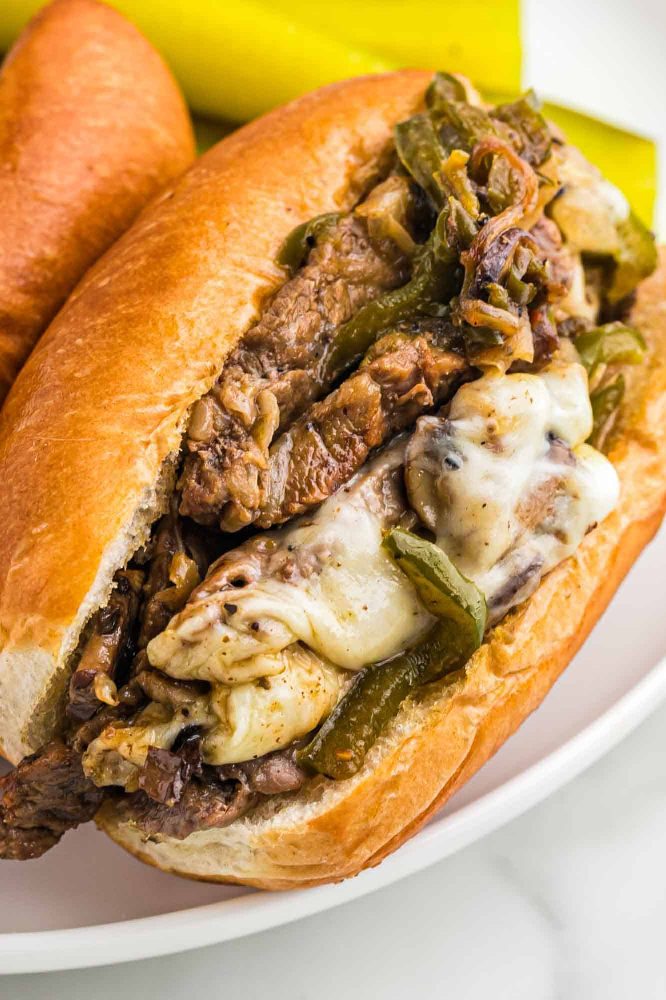

Philly Cheese Steak

Thinly sliced steak is cooked with onion, cheese spread, and a splash of teriyaki sauce, and served on sandwich rolls
A mouthwatering deliciousness wrapped around a bun with irresistible goey american cheese.
A staple meal for the people of Philadelphia, Many cheesesteak aficionados also like to top their cheesesteaks with fried onions, peppers, mushroom and ketchup.
Ingredients
- One pound of fresh steak
- One large yellow onion
- Three Tablespoons of "Kikkoman Teriyaki Marinade"
- Four slices of American cheese or provolone cheese
Recipe instructions
- Saute onions and 2 tablespoons of teriyaki sauce until the onions are soft.
- Add the sliced meat and cook until meat browns slightly.
- add remaining 1 tablespoon of teriyaki sauce and stir to combine.
- Place cheese on the meat and stir until melted, mixing meat, onions and cheese together.
- Scoop meat mixture onto sandwich rolls.